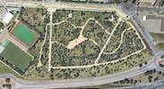
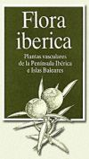

|
Unidades.- 1ª Parte: Temas de Botánica
|
1
|
Introducción a la Biología Vegetal (4 h).-
Primera parte: Enlace al guión del tema
(presentación "pps" para descargar)
- Organización
de
la
asignatura.
- Espacios
y medios a utilizar.
- Conceptos
básicos
en Biología Vegetal.
- Los
vegetales como objeto de estudio en Biología.
- Aspectos
morfológicos
y fisiológicos de los vegetales.
- Principios
básicos
del pensamiento y del método científico aplicados a
la Botánica
Segunda
parte
- Principios de Botánica Sistemática
- Nociones de Nomenclatura
|
|
2
|
El estudio morfológico de
los vegetales (3 h).-
- Niveles
de organización en los vegetales.
- Protofitas
- Talofitas
- Cormofitas
- Breve historia evolutiva de las
plantas terrestres
- Métodos
de recolección y estudio morfológico de talofitas y
cormofitas. Toma de muestras para estudio
científico: (ficheros "pps" para descargar)
- algas
macroscópicas;
- algas
microscópicas;
- hongos
y líquenes;
- briofitas
y cormofitas.
|
Práctica 1.-Estudio
de la flora y la vegetación de un parque rústico
|

|
Práctica 2.-Itinerario
botánico (Campus)
|
|
3
|
Análisis morfométrico de
las Cormofitas (4 h).-
- Concepto
y partes del cormo típico:
- Concepto
de
cormo
- Raiz
- Vástago:
yemas y tallos
- Hojas
- Estructuras
reproductoras
- Análisis morfológico y medidas de
las plantas; procedimientos normalizados:
- Introducción
- Caracteres
del
conjunto de la planta
- Caracteres
del
vástago: yemas y tallos
- Caracteres
de
la hoja
- Descripciones: metodología
descriptiva en Botánica.
- Introducción
- Medidas
- Estilo
y orden
- Ejemplos
|
Práctica
3.-Medidas de cormofitas in situ (Campus)
|
|
4
|
Métodos
básicos para el estudio de las poblaciones y
comunidades vegetales (2 h).-
- Conceptos de flora y vegetación.
- Concepto
de
Geobotánica
- Concepto
de
flora
- Concepto
de
vegetación
- Caracteres taxonómicos y
diagnósticos: clasificación versus determinación.
- Introducción
- Caracteres
taxonómicos
- Caracteres
diagnósticos
- Estructura de una población.
- Introducción:
concepto de población
- Importancia
del concepto de población
- Estructura
de
una población de plantas
- El método florístico-ecológico en
la delimitación de comunidades vegetales.
- Introducción
- Bases
del método florístico-ecológico de la
Fitosociología
- Crítica:
ventajas e inconvenientes
|
Práctica 4.-Introducción a la
determinación de plantas con flores mediante claves
dicotómicas (práctica de laboratorio)
Práctica
5.-Inventario florístico (Campo)
- Protocolo
(2022) PDF
- Los
documentos para interpretar las hojas e
identificar las especies son los mismos que en
la práctica nº 2.
|
5
|
Documentación de la
información científica en Botánica (2 h).- (una
parte de este tema se desarrollará dentro de las
sesiones prácticas)
- Fuentes y documentos tradicionales.
- La
etiqueta de herbario.
- La
ficha monográfica.
- Monografías
taxonómicas.
- El
inventario florístico.
- El
catálogo florístico.
- Floras
analíticas
y descriptivas.
- Bases de datos informatizadas.
- Índices
de Nomenclatura.
- Bases
de datos florísticas.
- Floras
en línea.
- Literatura
botánica
en línea.
- Otros
documentos en línea.
 Temporalmente no
disponibles
|
INTERNATIONAL CODE OF BOTANICAL
NOMENCLATURE online
|
Práctica
6: primera parte.-Análisis de fuentes
bibliográficas en línea (sala de informática)
Práctica 6: segunda parte.-Uso
de bases de datos florísticas en linea (sala de
informática)
El cuaderno de prácticas está en la
plataforma de enseñanza virtual.
|
|